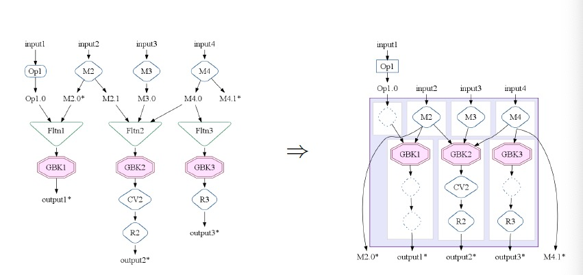

FlumeJava: Easy, Efficient Data-Parallel Pipelines
The combination of high-level abstractions for parallel data and computation, deferred evaluation and optimization, and efficient parallel primitives yields an easy-to-use system that approaches the efficiency of hand-optimized pipelines.
VS MapReduce
- Real-life computations require a chain of MapReduce stages. FlumeJava can optimize the execution plan and choose implementation strategy(local loop, remote MapReduce, etc) when running the execution plan.
- FlumeJava is easier to develop and test. Parallel collections abstract away the details of data representation and parallel operations abstract away the implementation strategy.
- FlumeJava automatically deletes temporary intermediate files when no longer needed.
Basics
- Data:
- immutable bag of elements
PCollection<T>. - immutable multi-map
PTable<K, V>.
- immutable bag of elements
- Operations:
parallelDofor map/reduce.groupByKeyfor shuffle.combineValuesis a special case ofparallelDo. It is more efficient since MapReduce combiner is allowed.flattenviews a list ofPCollection<T>as a singlePCollection<T>(no copy).joinreturnsPTable<K, Tuple<Collection<V1>, Collection<V2>>>and is implemented with intermediate typePTable<K, TaggedUnion2<V1, V2>>.
Optimizer
ParallelDo Fusion
- Producer-consumer fusion: replace with .
- Sibling fusion: replace with .
MSCR Fusion
MSCR(MapShuffleCombineReduce) operation is the intermediate operation to help bridge the gap between(1) combinations of operations and (2) single MapReduces.

Strategy
The optimizers performs multiple passes over the execution plan to produce the fewest, most efficient MSCR operations.
- Sink Flattens: create opportunities for ParallelDo fusion.
- Lift CombineValues operations: CombineValues immediately follows GroupByKey is subject to ParallelDo fusion.
- Insert fusion blocks: for ParallelDos between two GroupByKeys, FlumeJava needs to estimate size of intermediate output and mark boundary to block ParallelDo fusion.
- Fuse ParallelDos.
- Fuse MSCRs.
Executor
Batch execution: FlumeJava traverses the operations in the execution plan in forward topological order.Independent operations are operated simultaneously.